goodallduck@gmail.com
기획 · 촬영 · 편집 · 8:47 · 2025.12
편집 · 9:19 · 2026.10
편집 · 7:14 · 2025.10
편집 · 5:57 · 2026.10
기획 · 촬영 · 편집 · 5:45 · 2025.09
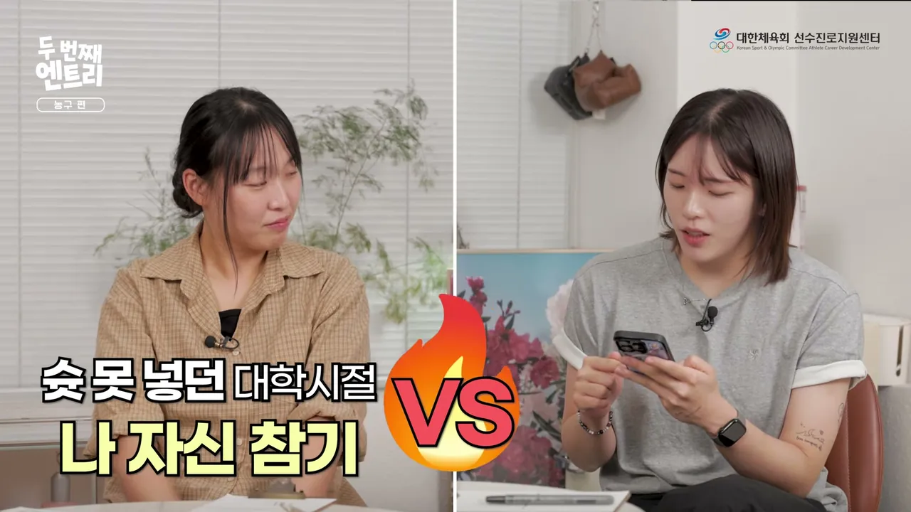
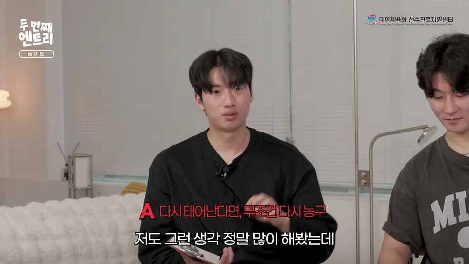
편집 · 11:09 · 2026.10
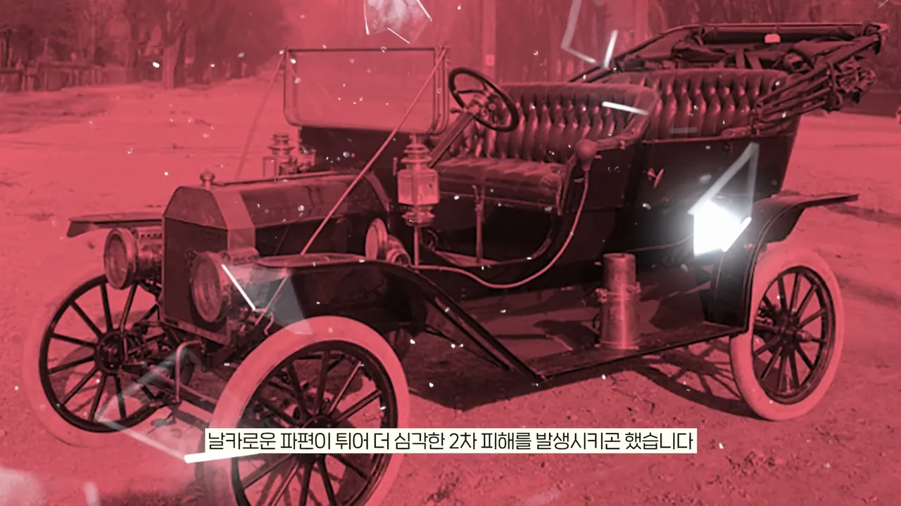
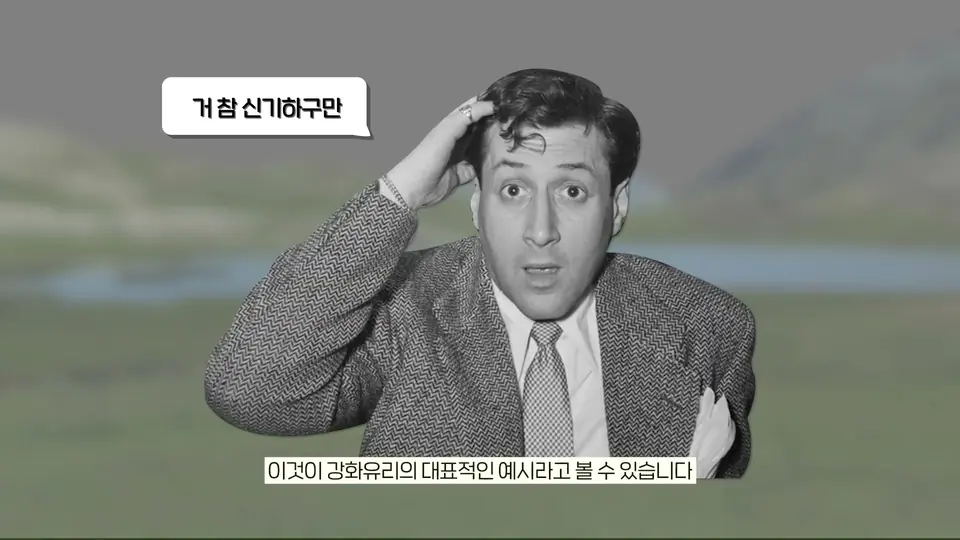
기획 · 제작 · 편집 · 6:46 · 2025.08
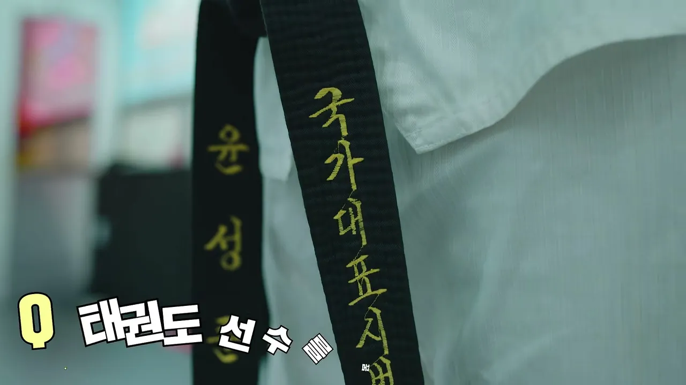
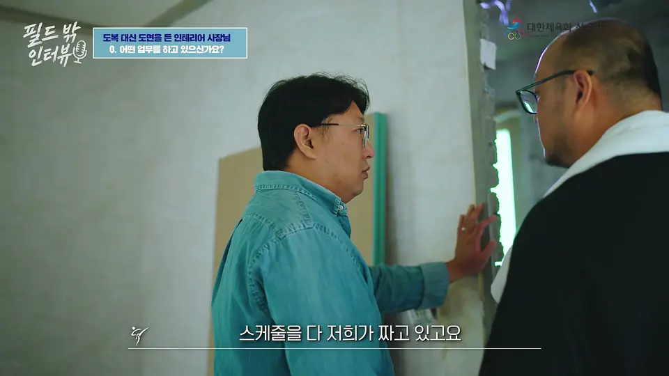
편집 · 5:55 · 2026.09
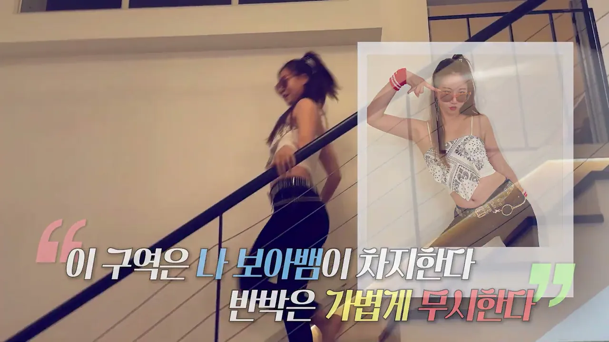
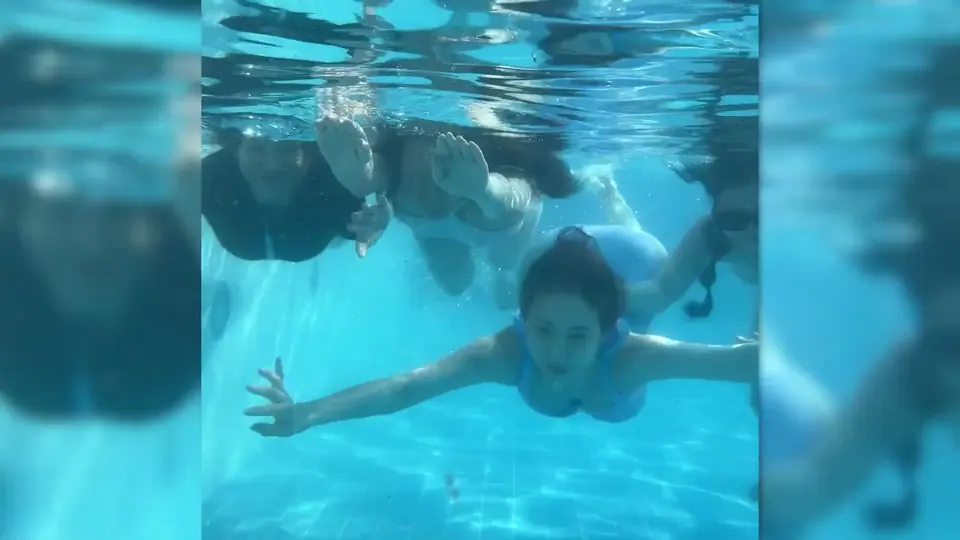
편집 · 12:23 · 2024.07
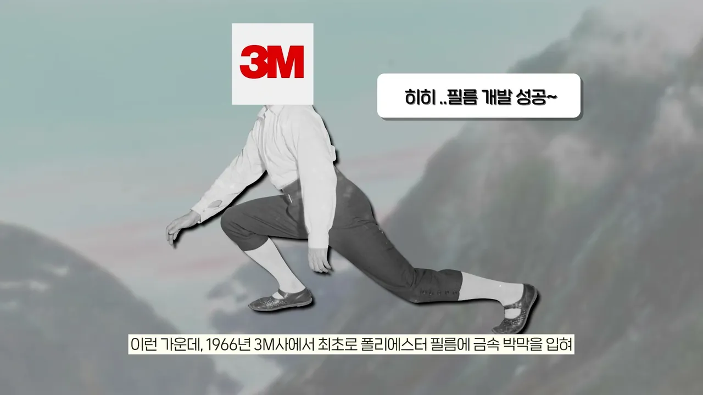
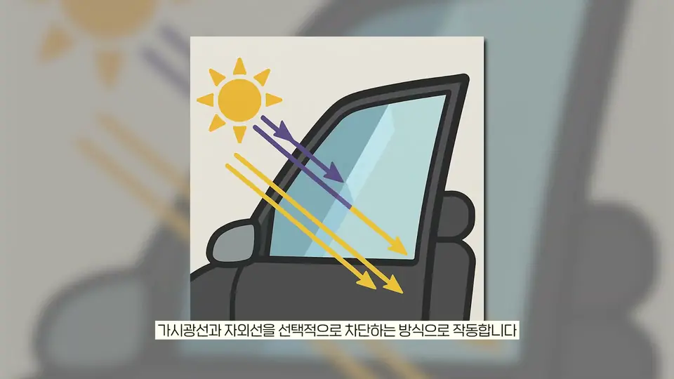
기획 · 편집 · 5:44 · 2025.08
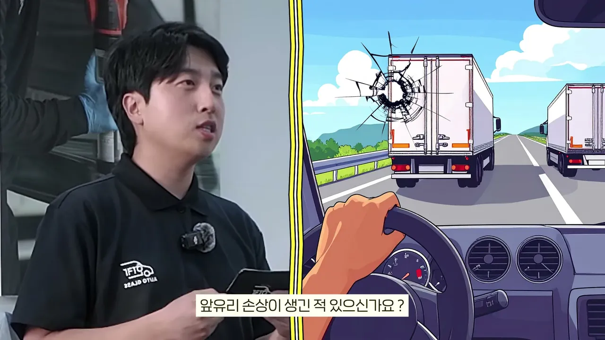
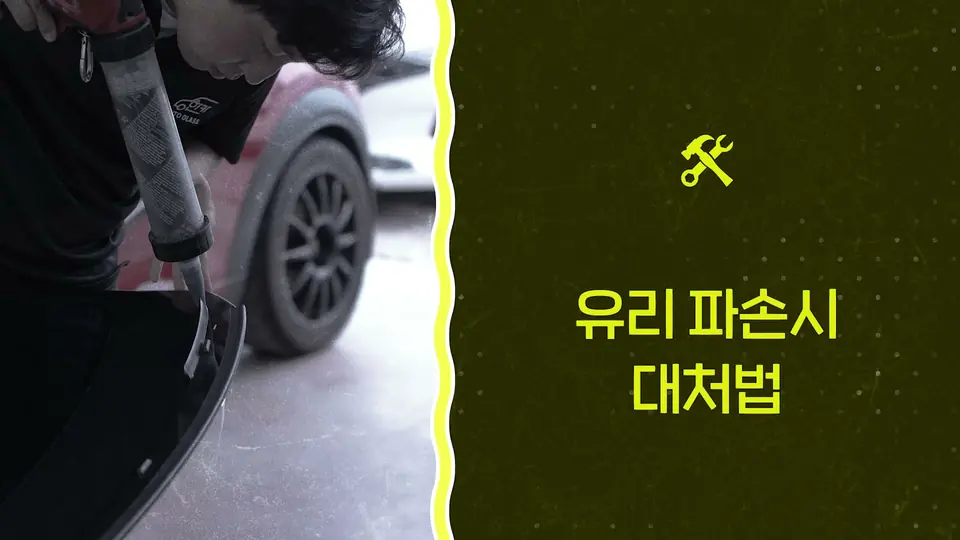
기획 · 촬영 · 편집 · 3:18 · 2025.06
영상, 맡겨보실래요?